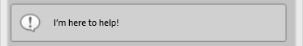

QuickBrush Documentation
01-14-2014; v1.1.1
QuickBrush is a convenient tool for placing large quantities of prefab objects in a scene by “painting” them onto surfaces such as terrain or walls. The tool panel contains several convenient settings for scattering, scaling, and rotating the objects it places.
1. Installation & Setup
2. Using QuickBrush
Tool Overview
Prefab Area
Painting Basics
Brush Settings
Sorting Settings
Rotation Settings
Position Settings
Scale Settings
Eraser Settings
Tabs & Brush Templates
Help Box
Installation of QuickBrush is standard Unity Procedure:
1. If you haven’t already, open the Unity project in which you want to use QuickBrush.
2. Find the QuickBrush UnityPackage in your file browser, and double-click it, or import it from the Unity Asset Store if you purchased it there.
3. Unity will show and “import files” dialogue - just click “yes” and import all files
- a. Allow any overrides if prompted
- b. After the files are installed, you may move the ProCore folder into sub-folders of your project, if you wish (QuickBrush is not location dependent, although other ProCore tools may be affected, depending on the version)
QuickBrush is organized to give ready access to the most often used controls. Keyboard shortcuts are added for convenience. Feel free to send feedback on your usage patterns to "playTangent@procore3d.com". I’ll use feedback to improve the tool in future revisions.
|
Looking from the top down, QuickBrush has a brush/eraser/placement mode indicator at the top, along with some keyboard shortcut reminders. The on/off indicator doubles as a toggle button for turning on/off the entire tool when clicked. These are followed by a Drag & Drop field for prefabs. This is where prefabs that you wish to place should be dragged from your project folders. Below are several foldouts containing different settings. Brush Settings, Sorting, Rotation, Position Offset, Scale, and Eraser Settings. At the bottom, there is a tab-style interface for saving and loading brush templates. Finally, a handy helpbox at the very bottom of the tool offers a handy reference for any control that the mouse hovers over - akin to a tool tip. |
The Prefab Drag & Drop Field spans the editor window.
You can drag any GameObject prefab onto the Prefab Drag & Drop Field. You can also drag multiple prefabs onto the field at a time. Once prefabs are dropped in, the Drag & Drop field collapses to the left and becomes small. A list of prefabs cues up on the right. When it fills beyond the size of the editor window, it becomes scrollable.
Clicking the large Blue Triangle below the collapsed prefab drop field toggles between displaying the prefab list as a scrollable list or a grid.
To collapse the panel, just click the opposite triangle that appears as part of the border at the bottom of the grid view.
By default, QuickBrush picks prefabs at random from this list and places them according to tool settings. Each prefab in the list is represented by a tile containing a slider, a preview window, and two overlaid controls (a Red X icon and a Green Checkmark).
The Vertical Slider sets the likelihood, vs other prefabs in the list, that the item will be randomly selected for placement each brush iteration.
Clicking the Red X icon removes the prefab from the list.
The Green Checkmark is used to toggle one prefab for exclusive placement. When an item is checked, the tool will only place that item instead of randomly selecting one.
When the window is open, you activate the brush by holding down (Ctrl). You can make manual scene adjustments and then simply hold down (Ctrl) any time you want to paint. The Indicator turns blue when the brush (or eraser) is ON.
Pressing (Ctrl + x) toggles between brush and eraser. The indicator icon will change to reflect this.
The Brush indicator doubles as a toggle button. You can use it to turn off the tool and free up the hotkeys, without closing the QuickBrush window.
Marking an item with a Green Checkmark can be especially useful when using Individual Precision Placement. Precision Placement is triggered by holding down (Ctrl + Shift) and then Clicking & Dragging the mouse. The brush indicator shows the precision placement icon.
Clicking Down the Mouse spawns a single instance of the selected prefab. Dragging the Mouse while still holding the mouse button down, scales and rotates the object. Releasing the mouse button finalizes placement. This tool displays a special handle to indicate scale and direction.
The Brush Indicator and Prefab Drag & Drop Field will always remain anchored to the top of the window. Below these are foldouts for different categories of settings. Here they are in order:
Settings in this foldout pertain to the size of the brush and the way it interacts with paintable surfaces.
Brush Radius sets the total radius of the brush/eraser tool in world units. The Min and Max fields below allow you to set the limits of the slider.
Scatter Amount allows you to set how much of the total brush radius is used to randomly scatter objects when they are being placed on the paintable surface, from 0.0 (none) to 1.0 (all). (THIS OPTION HAS BEEN REMOVED AS REDUNDANT AS OF VERSION 1.1.1)
Stroke Spacing sets the distance between brush iterations (meaning that this is the world distance you will drag the brush before it attempts to place an object again). As with brush radius, the Min and Max fields allow you to set the limits of the slider.
This foldout deals with layers and groups.
Paint to Layer restricts the brush from painting on any layer other than the one designated via the Choose Layers dropdown.
As of version 1.0.4 it is possible to select multiple layers. With 'paint to layer' checked on, The brush will simply ignore any layers not selected in the dropdown.
As of verision 1.1, multiple brushes can be used in tandem. The in-scene cursor respects all layers chosen in each of the active brush templates. Once a stroke is initiated, each brush places prefabs based on its individual layer settings, so each brush places prefabs on objects belonging to the layers selected in its masking dropdown.
Paint to Selection toggles an additional refinement which restricts the brush from painting onto any but the objects selected in the scene. This setting stacks with Paint to Layer. Using both 'paint to layer' and 'paint to selection', the brush will ignore any surfaces but ones selected in the scene and belonging to the layers masked in the dropdown.
As of version 1.1, multiple brushes can be used in tandem. The cursor respects all objects based on layer settings, unless all active templates are set to paint to selection. Once a stroke is initiated, each brush places prefabs based on its individual paint to selection settings, so objects placed by one brush may end up being placed only on objects selected in the scene, while others are placed on all objects.
Group Placed Objects allows you to toggle whether placed objects should be parented to a group object in the scene. When toggled on, you can use the options below to either choose a group that’s already in the scene, or name and create a new group. When painting with multiple brushes in tandem, each brush can be placing its prefabs into its own group.
Choose Existing Group is a dropdown which allows you to pick a group from those which have already been created in the scene.
Name New Group Type a name for your new group here and then click the Add button to add it to the scene. Once a group is created, it shows up in the Choose Existing Group dropdown.
Once a brush is assigned to a named group, if the brush is saved and later loaded in another scene where that group does not exist, QuickBrush will automatically create a group with that name when you begin painting.
This foldout contains alignment toggles and sliders for offsetting the placed object's rotation from there.
Align to Surface puts placed prefabs upright on the paintable surface. Meaning that it aligns the up vector of the each prefab to the normal of the surface on which it is being placed.
Align to Stroke conforms the forward vector of each prefab to the direction of the brush stroke. This setting stacks with Align to Surface.
Both settings have a Flip option, which simply flips the way that the prefab instance aligns to that axis.
If neither Alignment feature is toggled ON, objects are aligned to world up and world forward.
Offset Sliders allow you to set a random range of deviation from the initial alignment per axis. Each slider allows you to set the upper and lower maximum deviation in degrees up to which the placed prefabs will be randomly rotated about the given axis.
The bow-tie looking icon next to these sliders can be clicked to re-center them to 0 degrees deviation.
These offsets are applied on top of any previous placement settings such as Align to Surface or Align to Stroke.
This foldout allows you to offset the objects along the axes established by the Object Rotation settings.
Each of the three float fields here allows you to enter how far along each axis the object will be offset. For example, if you have 'align to normal' checked in the rotation settings, changing the value of Offset Y will move the prefab instances into, or away from, the surface on which they are being placed.
Much like the Mesh Rotation foldout, the Mesh Scale Range foldout allows you to set the range within which a property is randomized. This foldout uses split sliders so you can set the upper and lower limits for the random scaling of placed objects.
The Min and Max fields on the right allow you to set the minimum and maximum available slider values.
The Uniform Scale and Per Axis Scale toggles allow you to determine whether randomness is applied to scale on all axes the same, or if each axis is randomized separately.
The minimum and maximum values of each split slider set the smallest and largest scale that an object can randomly be scaled to. If you don’t split the sliders, you will essentially be setting the exact scale you want objects to be spawned at rather than a random range.
The Eraser Settings foldout offers settings to restrict which objects are affected by the eraser.
Erase by Group restricts erasing to just the group selected in the Sorting Settings foldout, if 'Group Placed Objects' is checked and a group is selected. Otherwise the eraser ignores this setting. It allows you to set up things like multiple brushes, each of which places objects into a different group and only erases objects that it has placed.
Erase Selected Prefab restricts erasing only to instances of the prefab checked in the prefab panel. If no prefab is checked, the eraser ignores this setting.
These settings stack, so you can elect to erase only objects that are instances of a specific prefab and belong to a specific group.
Anchored to the bottom of the QuickBrush window is the template section, containing controls for saving, loading, and switching between brush templates.

First, we have a text field containing the name of the brush in the currently selected tab. A new brush is unnamed. A name must be entered before it can be saved to disk. Next to the text field, there is a save button. Click this to save the current template to disk under the name in the field. Whenever changes are made to the settings, this button becomes enabled, indicating that changes have been made since the last save.
For added clarity, an asterisk is displayed underneath each tab containing a template that has unsaved changes.
Below, spanning the width, is a row of up to 6 tabs. Each tab holds an active brush template, and you can switch between these templates by clicking on the individual tab icons. The active tab is highlighted in yellow and has an overlap effect.
To create a new template or open a saved template, simply click the open file icon above the slot in which you would like to create it, or the one on the far right 'blank' tab. Then select the template file you want to load or choose “New Template” from the dropbdown that appears.
To save the brush template, name it using the text entry field and click the Save Icon next to it.
Your saved brush templates will appear in the dropdown list so you can load them into a slot using the aforementioned dropdown. The actual files are located in your project folder under ProCore/QuickBrush/Templates. To delete a brush template, just delete it from there. In future versions, another way of deleting files may be added if users ask for it.
If you close the QuickBrush window without saving the open templates, QuickBrush will temporarily hold onto your settings between sessions, so that when you re-open the tool, your templates will be there as you left them. Just make sure to save templates to file before closing their respective tabs or loading a new template in their place (QB will remind you with a pop-up so that you don't lose settings).
Active Tabs & Multi Brush Painting As of QuickBrush 1.1.0, templates can be used in tandem, meaning that you can set up several brushe templates and paint with them simultaneously. This offers many advantages. You can place different sets of objects with different scattering, scaling, and rotation settings. You can have each brush put its objects in a different group. And each brush can paint to a different set of layers.
Each tab has beneath it a small green checkmark. Toggling this checkmark on adds the brush to the group of active brushes.
Making a stroke in the scene view will apply the brush in the currently selected tab, as well as any other brush in the active brush group. This is an experimental feature and all the details of the workflow have not yet been widely tested, so I'm anticipating feedback on this feature. The issue that appears to need the most attention is how layers are handled.
Restore Defaults just below the tabs, there is a button entitled 'Restore Defaults'. This just resets all of the settings in the template in the currently selected tab to default values. The identity of the template remains the same, so this isn't creating a new template per se, just resetting the one you are working on.
Anchored at the very bottom of the QuickBrush window, there is a Help Box.

This basically serves as a tool-tip. Whenever you hover your cursor over any of the controls for a moment, the Help Box will display a short explanation of what that control does. I did my best to do get them all. Let me know if I missed anything or if any of the explanations are unclear. I have a feeling this will become increasingly useful as more complex features are added to QuickBrush in future revisions.
Documentation is a useful reference, but lousy teaching. Don’t forget to check out the videos at www.proCore3d.com/quickbrush. New videos will be added as future revisions of QuickBrush are released with new features that need explaining. If you have any questions or suggestions for features and workflow improvements, please email: playTangent@procore3d.com.